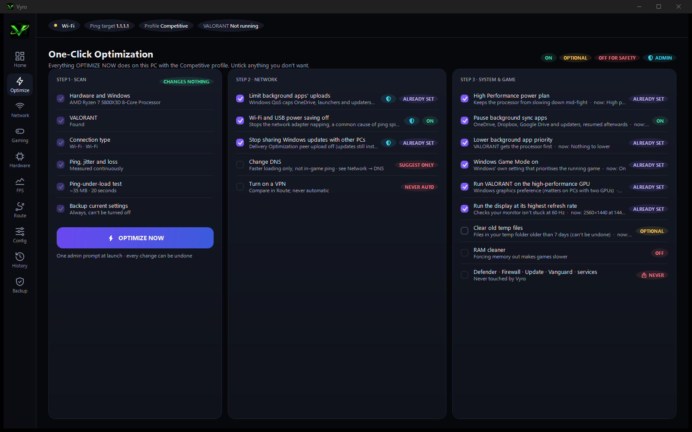

One-click optimization
Press OPTIMIZE NOW. VYRO checks your PC, backs up your settings, applies safe Windows changes and measures again.
- See every change before it happens. Untick what you don't want
- Limits background uploads that cause ping spikes
- Power plan, Game Mode, GPU choice, refresh rate
- Before/after results, then one-click undo
